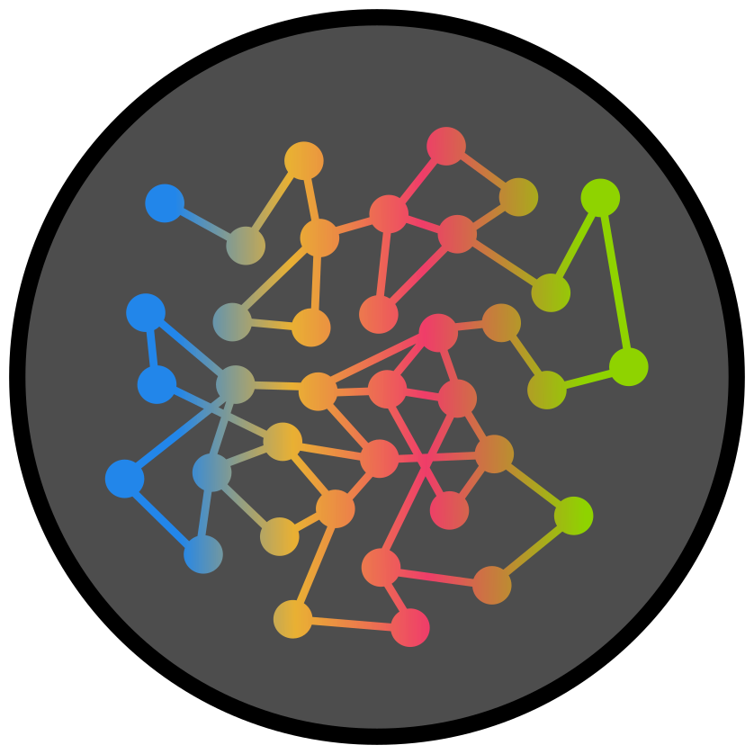

GARRIDO-RODRIGUEZ LABTranslational Systems Biology
We aim to transform large-scale molecular data into actionable biomedical knowledge. We develop experimental and computational approaches to measure and model complex biological systems, studying signal processing from a protein-centric perspective. We focus particularly on how cells process environmental signals, respond to therapeutic perturbations, and communicate with their surroundings. In doing so, we generate testable hypotheses and predictive models to inform translational research and therapeutic decision-making.
Our Research
Studying signal transmission with LC-MS/MS
We develop and apply scalable LC-MS/MS-based proteomics and phosphoproteomics workflows to capture molecular snapshots of biological samples under basal and perturbed conditions, gaining quantitative insight into signaling pathways, cellular states, and treatment-induced molecular responses.
Integration with structured biological knowledge
We integrate large-scale molecular readouts, including genomics, transcriptomics, proteomics, phosphoproteomics, and metabolomics, with pathways, regulatory networks, and functional annotations to improve interpretation and prioritize hypotheses for experimental follow-up.
Predictive modeling of perturbations
Our long-term goal is to build accurate, scalable, and interpretable models that simulate perturbations in biological systems, learning from growing perturbational datasets to predict how cells and tissues respond to drugs, genetic alterations, and environmental change.
Publications
- Benchmarking EGF signaling pathway inference using phosphoproteomics and kinase-substrate interactions Nature Communications, 17, 2071 (2026) · doi:10.1038/s41467-026-69332-0
- Unifying multi-sample network inference from prior knowledge and omics data with CORNETO Nature Machine Intelligence, 7, 1168–1186 (2025) · doi:10.1038/s42256-025-01069-9
- Uncovering protein glycosylation dynamics and heterogeneity using deep quantitative glycoprofiling (DQGlyco) Nature Structural & Molecular Biology, 32, 1111–1126 (2025) · doi:10.1038/s41594-025-01485-w
- NetworkCommons: bridging data, knowledge, and methods to build and evaluate context-specific biological networks Bioinformatics, 41, btaf048 (2025) · doi:10.1093/bioinformatics/btaf048
- Assessing the impact of transcriptomics data analysis pipelines on downstream functional enrichment results Nucleic Acids Research, 52, 8100–8111 (2024) · doi:10.1093/nar/gkae552
- Integrating knowledge and omics to decipher mechanisms via large‐scale models of signaling networks Molecular Systems Biology, 18, e11036 (2022) · doi:10.15252/msb.202211036
- A versatile workflow to integrate RNA-seq genomic and transcriptomic data into mechanistic models of signaling pathways PLOS Computational Biology, 17, e1008748 (2021) · doi:10.1371/journal.pcbi.1008748
- SWATH proteomic profiling of prostate cancer cells identifies NUSAP1 as a potential molecular target for Galiellalactone Journal of Proteomics, 193, 217–229 (2019) · doi:10.1016/j.jprot.2018.10.012
2026
- Benchmarking EGF signaling pathway inference using phosphoproteomics and kinase-substrate interactions Nature Communications, 17, 2071 (2026) · doi:10.1038/s41467-026-69332-0
- Multi-omics and biophysical phosphoproteomics upon BRAF inhibition uncover functional networks of BRAFV600E-driven signaling bioRxiv (preprint) (2026) · doi:10.64898/2026.02.09.704793
2025
- High-throughput peptide-centric local stability assay extends protein–ligand identification to membrane proteins, tissues and bacteria Nature Structural & Molecular Biology, 33, 184–192 (2025) · doi:10.1038/s41594-025-01699-y
- Cannabidiol improves metabolic profiles and alleviates liver inflammation and fibrosis in conditions of androgenic obesity and polycystic ovary syndrome Diabetes, Obesity and Metabolism, 27, 6027–6031 (2025) · doi:10.1111/dom.16602
- ScAPE: A lightweight multitask learning baseline method to predict transcriptomic responses to perturbations bioRxiv (preprint) (2025) · doi:10.1101/2025.09.08.674873
- A novel feedback loop between DYRK2 and USP28 regulates cancer homeostasis and DNA damage signaling Cell Death & Differentiation, 33, 77–91 (2025) · doi:10.1038/s41418-025-01565-w
- Unifying multi-sample network inference from prior knowledge and omics data with CORNETO Nature Machine Intelligence, 7, 1168–1186 (2025) · doi:10.1038/s42256-025-01069-9
- Dynamic multi-omics and mechanistic modeling approach uncovers novel mechanisms of kidney fibrosis progression Molecular Systems Biology, 21, 6 (2025) · doi:10.1038/s44320-025-00116-2
- Comprehensive evaluation of phosphoproteomic-based kinase activity inference Nature Communications, 16, 4771 (2025) · doi:10.1038/s41467-025-59779-y
- What is the current bottleneck in mapping molecular interaction networks? Cell Systems, 16, 101295 (2025) · doi:10.1016/j.cels.2025.101295
- Uncovering protein glycosylation dynamics and heterogeneity using deep quantitative glycoprofiling (DQGlyco) Nature Structural & Molecular Biology, 32, 1111–1126 (2025) · doi:10.1038/s41594-025-01485-w
- NetworkCommons: bridging data, knowledge, and methods to build and evaluate context-specific biological networks Bioinformatics, 41, btaf048 (2025) · doi:10.1093/bioinformatics/btaf048
2024
- Etrinabdione (VCE-004.8), a B55α activator, promotes angiogenesis and arteriogenesis in critical limb ischemia Journal of Translational Medicine, 22, 1003 (2024) · doi:10.1186/s12967-024-05748-w
- Investigation in the cannabigerol derivative VCE-003.2 as a disease-modifying agent in a mouse model of experimental synucleinopathy Behavioral and Brain Functions, 20, 28 (2024) · doi:10.1186/s12993-024-00256-9
- Pervasive sublethal effects of agrochemicals on insects at environmentally relevant concentrations Science, 386, 446–453 (2024) · doi:10.1126/science.ado0251
- Assessing the impact of transcriptomics data analysis pipelines on downstream functional enrichment results Nucleic Acids Research, 52, 8100–8111 (2024) · doi:10.1093/nar/gkae552
- Network integration of thermal proteome profiling with multi-omics data decodes PARP inhibition Molecular Systems Biology, 20, 10 (2024) · doi:10.1038/s44320-024-00025-w
2023
- FBXW7 tumor suppressor regulation by dualspecificity tyrosine-regulated kinase 2 Cell Death & Disease, 14, 202 (2023) · doi:10.1038/s41419-023-05724-0
2022
- Integrating knowledge and omics to decipher mechanisms via large‐scale models of signaling networks Molecular Systems Biology, 18, e11036 (2022) · doi:10.15252/msb.202211036
- Comparison of methods and resources for cell-cell communication inference from single-cell RNA-Seq data Nature Communications, 13, 3224 (2022) · doi:10.1038/s41467-022-30755-0
- A novel CDC25A/DYRK2 regulatory switch modulates cell cycle and survival Cell Death & Differentiation, 29, 105–117 (2022) · doi:10.1038/s41418-021-00845-5
2021
- Cell‐to‐cell and type‐to‐type heterogeneity of signaling networks: insights from the crowd Molecular Systems Biology, 17, e10402 (2021) · doi:10.15252/msb.202110402
- EHP-101 alleviates angiotensin II-induced fibrosis and inflammation in mice Biomedicine & Pharmacotherapy, 142, 112007 (2021) · doi:10.1016/j.biopha.2021.112007
- Betulinic Acid Hydroxamate is Neuroprotective and Induces Protein Phosphatase 2A-Dependent HIF-1α Stabilization and Post-transcriptional Dephosphorylation of Prolyl Hydrolase 2 Neurotherapeutics, 18, 1849–1861 (2021) · doi:10.1007/s13311-021-01089-4
- Implementation of CRISPR/Cas9 Genome Editing to Generate Murine Lung Cancer Models That Depict the Mutational Landscape of Human Disease Frontiers in Cell and Developmental Biology, 9, 641618 (2021) · doi:10.3389/fcell.2021.641618
- A versatile workflow to integrate RNA-seq genomic and transcriptomic data into mechanistic models of signaling pathways PLOS Computational Biology, 17, e1008748 (2021) · doi:10.1371/journal.pcbi.1008748
2020
- Updating dual-specificity tyrosine-phosphorylation-regulated kinase 2 (DYRK2): molecular basis, functions and role in diseases Cellular and Molecular Life Sciences, 77, 4747–4763 (2020) · doi:10.1007/s00018-020-03556-1
- Δ9 ‐Tetrahydrocannabinolic acid alleviates collagen‐induced arthritis: Role of PPARγ and CB 1 receptors British Journal of Pharmacology, 177, 4034–4054 (2020) · doi:10.1111/bph.15155
- Effects of EHP-101 on inflammation and remyelination in murine models of Multiple sclerosis Neurobiology of Disease, 143, 104994 (2020) · doi:10.1016/j.nbd.2020.104994
- Phosphorylation-dependent regulation of the NOTCH1 intracellular domain by dual-specificity tyrosine-regulated kinase 2 Cellular and Molecular Life Sciences, 77, 2621–2639 (2020) · doi:10.1007/s00018-019-03309-9
- Tetrahydrocannabinolic acid A (THCA-A) reduces adiposity and prevents metabolic disease caused by diet-induced obesity Biochemical Pharmacology, 171, 113693 (2020) · doi:10.1016/j.bcp.2019.113693
- Cannabidiol induces antioxidant pathways in keratinocytes by targeting BACH1 Redox Biology, 28, 101321 (2020) · doi:10.1016/j.redox.2019.101321
2019
- Cannabinoid derivatives acting as dual PPARγ/CB2 agonists as therapeutic agents for systemic sclerosis Biochemical Pharmacology, 163, 321–334 (2019) · doi:10.1016/j.bcp.2019.02.029
- SWATH proteomic profiling of prostate cancer cells identifies NUSAP1 as a potential molecular target for Galiellalactone Journal of Proteomics, 193, 217–229 (2019) · doi:10.1016/j.jprot.2018.10.012
2018
- EHP-101, an oral formulation of the cannabidiol aminoquinone VCE-004.8, alleviates bleomycin-induced skin and lung fibrosis Biochemical Pharmacology, 157, 304–313 (2018) · doi:10.1016/j.bcp.2018.07.047
- Metabolomic profiling of human lung tumor tissues – nucleotide metabolism as a candidate for therapeutic interventions and biomarkers Molecular Oncology, 12, 1778–1796 (2018) · doi:10.1002/1878-0261.12369